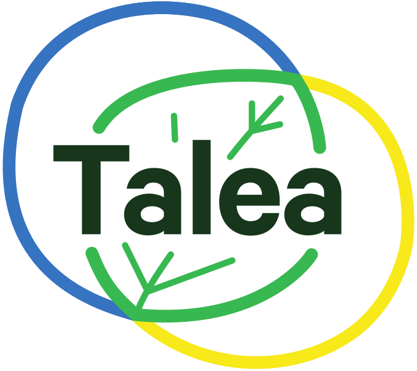

Talea - isole di calore di Bologna
Nascondi
Dati da temperatura di superficie da satellite - estate 2024
Scegli il layer:
-- Nessuno --
📊🌡️ Scostamento dalla media
🌞🌙🌡️ Escursione termica della superficie
🌿🌱 Presenza di verde
☀️⬛ Assorbimento della superficie
🌡️⏳ Accumulo di calore
🔥🌿 Calore/Vegetazione
🌇🔥 Esposizione complessiva
Trasparenza:
Sfondo:
OpenStreetMap
Ortofoto Bologna 2024